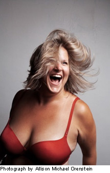

past performance | |

Fuck We Love Our Cuntry! Amber Martin and Bridget Everett |
 |
synopsis:In the footsteps of classic comic character monologists such as Ruth Draper, Carol Burnett and Lily Tomlin, acclaimed vocalist and performance artist, Amber Martin brings her award winning chops back to the stage of The Wild Project for a blow-out, first time Country music duo performance with NYC’s most beloved powerhouse singer and entertainer Bridget Everett! Written and performed by these two bawdy broads, they're callin it: Fuck We Love Our Cuntry! We’ve fallen in love with great country duos from Conway Twitty and Loretta Lynn to Tammy Wynette and George Jones. NOW… for the first time ever… Amber Martin, country to the core, has coupled with the wild and unpredictable Bridget Everett for a full-length Country strength assault!!! Get your ten-gallons and your goat ropers… fasten that pure gold-plated rodeo belt buckle tight. ‘Cause Fuck We Love Our Cuntry! Bridget Everett is a singing tour-de-force who has worked with many people over the last few years creating new work, including Michael Patrick King (Sex and the City), Kenny Mellman (Kiki and Herb), Neal Medlyn, and Adam Horovitz (Beastie Boys). Everett was recently named Time Out NY's #1 Cabaret Performer of 2010. She is the co-host of cult favorite OUR HIT PARADE and plays frequently with her band, the Tender Moments. She has done TV, film and stage work and played all around the country and even the world. But country? Not until tonight. The Texas-born singer Amber Martin has rocked the stage with Sandra Bernhard at Town Hall, The Scissor Sisters, Rufus Wainright, and Joan Rivers. She wrote, curated and starred in her acclaimed sold out NYC run, AMBER ALERT! This included such special guests as, Bridget Everett, John Cameron Mitchell (Hedwig And The Angry Inch), Jake Shears (Scissor Sisters), Justin Bond and Karen Black. Martin has appeared in Celebrity Apprentice as Reba, has been a recurring guest in the smash monthly live show, Our Hit Parade, and has played dual roles as a new age cult leader and the mother of Jonathan Caouette (Tarnation) in his new film Walk Away Renee. | |
upcoming performances |
|||
 |
|||
| EVQ Film Festival 2018 August 20-25 |
|||
performance archives |
|||
| 2018 | 2017 | 2016 | 2015 |
| 2014 | 2013 | 2012 | 2011 |
| 2010 | 2009 | 2008 | 2007 |